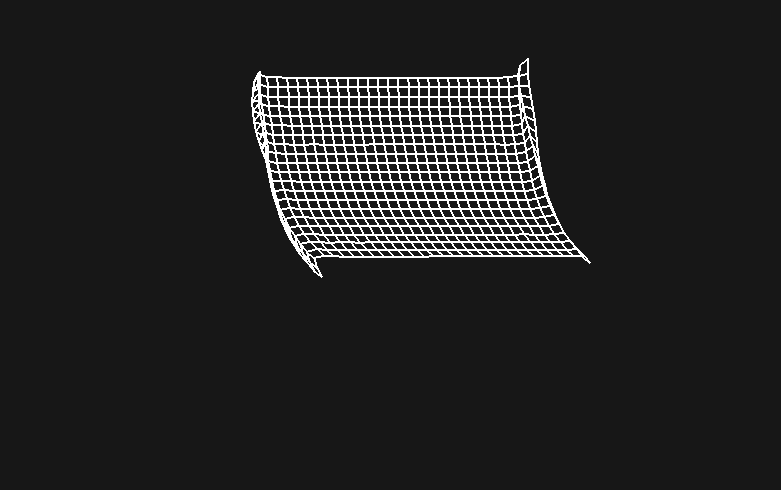

Making a simple cloth simulation is relatively straightforward. It involves estimating the position of multiple points in a grid using a method known as Euler's method.
Let's say we have a grid of points, where each point p has a position and previous position vector. We want to estimate where this point will be in the next time step t. To do this, we calculate a "velocity" as vel = current_pos - old_pos. We set the current position as old_pos and add the velocity to the current position.
By also adding a small gravity constant to the points y velocity we get a falling grid of points:
Now for the harder part. To simulate the elasticity, we need to make sure neighboring points try to stay together. To do this, we calculate the delta distance between the two points, find the desired distance between them, and compute an offset proportional to the displacement. Here's some pseudo code:
# For each line connecting two points
for line in lines:
# Get the delta position
dx = line.p1.x - line.p2.x
dy = line.p1.y - line.p2.y
dist = sqrt(dx*dx + dy*dy)
# The difference between the expected
# distance and the actual distance.
diff = line.dist - dist
displacement = diff / dist / 2
offsetx = dx * displacement
offsety = dy * displacement
# Apply the offset if the points are not pinned
if not line.p1.pinned:
line.p1.x += offsetx
line.p1.y += offsety
if not line.p2.pinned:
line.p2.x -= offsetx
line.p2.y -= offsety
Notice how we added a check to see if a point is pinned. Pinned points should not be affected by any forces, so you can simply ignore them when updating point positions.
With this new functionality forcing points to stay close to each other, line rendering, and some simple wind physics, we get a pretty good looking cloth simulation:
You can change the stiffness of the cloth by adjusting the number of times you run the point recalibration in with each iteration.